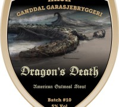

Batch #10 – Dragon’s Death

Søndag 18. oktober
Planlagt bryggedag blir endelig realisert. Det er mye potensielt fravær, men med et lappverk av timeplaner, tilstedeværelse og frafall lar det seg på et vis gjennomføre.
Det er kommet for en dag at vi nå skal brygge samme stout som forrige gang. Dette pga misforståelse. Ingen er videre lei seg, da den forrige smakte fortreffelig.
10:25 – Jonas ankommer bryggefasilitetene. Steffen drar.
10:40 – 37 liter meskevann er godt i gang med oppvarming. Venting starter.
10:45 – Det forsøkes å minske ventetiden ved hjelp fra Korea. Resultatet er negativt. Sikring i garasjen ryker. Usikkerhet rundt årsak fører til at varmtvannsbereder frakobles, og strøm hentes fra dennes kurs.
10:55 – Varmtvannsbereders kurs sikring ryker. Kobles til garasjekurs, og NÅ virker det.
11:10 – Fredrik ankommer.
11:15 – Meskevann målt til 57 grader.
11:40 – Vann holder 75 grader, korn tilsettes. Blir (sitat Jonas:) jævla fullt. Temperatur faller til 72 grader. Det er litt for varmt, men bryggelokalene holder 8 grader (det er bikkjekaldt) og vi forventer raskt temperaturfall.
11:53 – Koreawatt erklæres død. Vi har nå testet det på alle mulige sikringer i nærheten av bryggelokalene, og sikringen ryker så snart den kobles til. Selv når den er avslått. Det er enighet om at dette nok er Leif sin feil, og slår oss til ro med det.
11:55 – Mesk fremdeles på over 70 grader, selv om plata har vært av i 15 minutter.
12:15 – Gaute ankommer. Hadde glemt å stille klokka. Eller glemt at det ikke var denne dagen vi skulle stille klokka, og gjort det allikevel. Et eller annet med ei klokke i hvert fall.
12:20 – Mesketemperatur målt til hhv 65, 67 og 71 grader, med 3 ulike termometere. Mye snakk om klokker.
12:30 – Temperatur hhv 64, 65 og 69. Plata står på 3. Skyllevann snart ferdig på kjøkkenet.
Utvendig temperatur har nå kommet seg betraktelig. Solen står høyt på himmelen, og til tider kan det nesten virke litt vel varmt. Loggfører noterer seg at det kan være en idé å investere i en god bryggerstol. For anledningen benyttes bilpanser, bilbagasjerom og andre improviserte sittesteder.
12:35 – Mesk 66,68,75. Plate av. Fremdeles snakk om klokker.
12:40 – Skylling med ca 25 liter. Vørter til koking med stappfull gryte.
13:45 – Det koker. Preboil 52. Det snakkes om klokker som koster mer enn bilen min.
15:33 – OG målt til 50 ved 45 grader. Skal gi 58 ved 20 grader (visstnok). Humling osv.
Inne i varmen er det full familiefest, da laugets koner og avkom har kommet på visitt. Det høres barneskrål, latter og ulike kjadrelyder innefra, mens avkjøling pågår, samt overføring til gjæringsfat.
Noterer at vi skal vurdere å rengjøre (spyle eller annet) bryggelokalene før fremtidige brygg settes, da det er en del byggestøv o.l. i luften. Vi satser på at dette ikke har noen effekt på resultatet.
Bryggeloggskriver forlot åstedet i rengjøringsfasens start, og fikk dessverre ikke delta på det, men det antas at resultatet som vanlig ble tilfredsstillende. Er det noe bryggesjefen pleier ha kontroll på, er det renholdet.